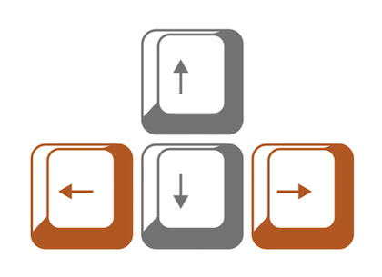
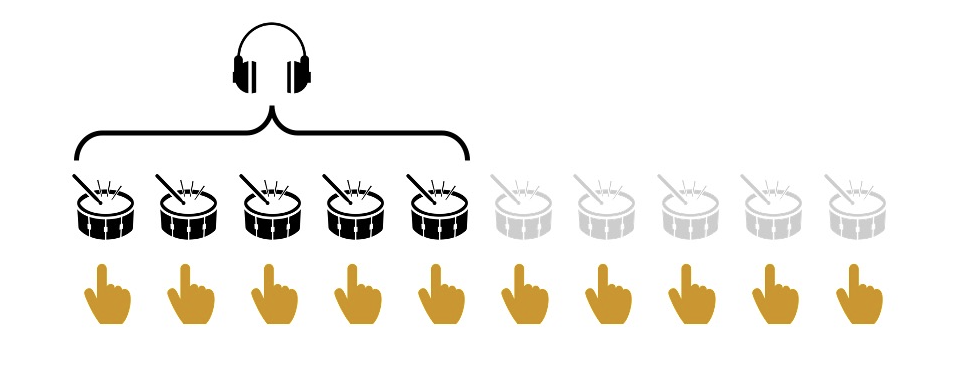

<!DOCTYPE html>
<html>

<head>
  <title> Beat Continuation Experiment </title>
  <script src="jatos.js"></script>
  <script src="OFJS_PID_3s.js"></script>
  <script src="OFJS_audiofiles.js"></script>
  <script src="jspsych-6.1.0/jspsych.js"></script>
  <script src="jspsych-6.1.0/plugins/jspsych-instructions.js"></script>
  <script src="jspsych-6.1.0/plugins/jspsych-audio-keyboard-responseSSS.js"></script>
  <script src="jspsych-6.1.0/plugins/jspsych-audio-keyboard-response-TAP.js"></script>
  <script src="jspsych-6.1.0/plugins/jspsych-html-button-response.js"></script>
  <script src="jspsych-6.1.0/plugins/jspsych-html-keyboard-response.js"></script>
  <script src="jspsych-6.1.0/plugins/jspsych-html-keyboard-response-ITI.js"></script>
  <link href="jspsych-6.1.0/css/jspsych.css" rel="stylesheet" type="text/css">
  </link>
</head>
<body></body>
<script>
  // FUNCTIONS ========================================================
  var volaudio = new Audio("setVol_ex.wav");

  function calc_ioi_med(arr) {
    var diff = new Array(arr.length - 1);
    for (var i = 0; i < arr.length - 1; i++) {
      diff[i] = arr[i + 1] - arr[i];
    }

    var sum = diff.reduce((sum, val) => (sum += val));
    var len = diff.length;
    var arrSort = diff.sort();
    var mid = Math.ceil(diff.length / 2);
    var median = len % 2 == 0 ? (arrSort[mid] + arrSort[mid - 1]) / 2 : arrSort[mid - 1];

    return Math.round(median / 1000);
  }
  function playVol(audio) {
    audio.play();
  };

  // JATOS STUFF HERE ========================================================
  jatos.onLoad(function() {
    // +++++++++++++++++++++++++++++++++++++++++++++++++++++++++++++
    function init_experiment() {

      // VARIABLES ========================================================
      var timeVar = [];

      var prolific_id = jatos.urlQueryParameters.prolific_id;
      var pt_index = jatos.batchSession.get(prolific_id);

      var current_participant = info_OFJS_PID[0];
      var timeline_pt1 = current_participant.timevars_part1;
      var timeline_pt2 = current_participant.timevars_part2;
      var curr_prac = current_participant.prac_IOI;
      console.log(timeline_pt1)


      var nogoodgottago = 0;

      // INSTRUCTIONS ---------------------------------------
      var helloo = {
        type: 'html-button-response',
        stimulus: '<pstyle="font-size:20px;">WELCOME</p><br>' +
          '<p>In this experiment, you will be asked to tap your finger on the keyboard, ' +
          'either without any sound, or alongside with the sounds you will listen to over your headphones.</p>',
        choices: ['Continue'],
      };
      var instrucPages = {
        type: 'instructions', // modified >> pauses wobaudio, noisaudio...
        pages: [
          '<p>Now, please turn down your volume and then click the button below.<br></p>' +
          '<button onclick="playVol(volaudio)"> play sound </button>' +
          '<p>Please set the sound volume of your computer such that you hear this sound comfortably.</p>' +
          '<p>You can listen to the sound as many times as you want until you set the volume. </p>' +
          '<p>Once it is set, click &#39next&#39.<br><br></p>', // SOUND LEVEL ADJUST

          '<p>In the following sections, you will tap on the arrow keys alongside with the sounds you will hear over your headphones.<br></p>' +
          '<p>You can use either one of the left or right arrow keys. </p>' +

          '<div style="text-align:center">' +
          '' +
          '</div>' +

          '<p>On each trial, you will hear a sequence of five sounds. Your task is to start tapping along with the sounds, and ' +
          'then keep going at the same rate once the sounds stop. You should keep tapping as evenly as possible until the ' +
          'screen changes color.</p>', // instruction1

          '<div style="text-align:center">' +
          '' +
          '</div>' +

          '<p>Here is a graphical representation of the task.<br></p>' +
          '<p>Remember, you should start tapping your finger <u>as soon as you can</u> and tap along with the sounds.</p>' +
          '<p>Keep tapping after the sounds stop, until the screen changes color.</p>' + // instruction  picture
          '<p>Click &#39next&#39 to proceed to the practice section.</p>',

        ],
        show_clickable_nav: true
      };
      var thxbye = {
        type: 'html-button-response',
        stimulus: '<p style="font-size:30px;">Thank you!</p>' +
          '<p>You have completed the experiment.</p>' +
          '<p>Click &#39close&#39 to close the experiment and proceed to Prolific.</p>',
        choices: ['Close']
      };

      // SMT & re-SMT (30 taps) ---------------------------------------
      var tapSMTinstruc = {
        type: 'html-button-response',
        stimulus: '<pstyle="font-size:20px;">TAPPING</p><br>' +
          '<p>Your first task is to tap on the keyboard by pressing the arrow keys on a regular beat. </p>' +
          '<p>You can use either one of the left or right arrow keys. </p>' +

          '<div style="display:table-cell; vertical-align:middle; text-align:center">' +
          '' +
          '</div>' +

          '<p>You will tap first on a comfortable speed, then slowest and then on the fastest speed. </p>' +
          '<p>Please try to tap as evenly as possible, until you see a message on the screen. </p>' +
          '<p>Click &#39continue&#39 when you are ready. </p>',
        choices: ['Continue']
      };
      var tapSMTcomfy = {
        type: 'audio-keyboard-responseSSS', // plugin has been modified to record multiple keypresses
        stimulus: 'silence.wav',
        choices: [37, 39],
        prompt: "<p>Please tap on the arrow key regularly, at a rate that is the most COMFORTABLE for you to maintain.</p>",
        response_ends_trial: true,
        //trial_duration: 10000,
        post_trial_gap: 500,
      };
      var tapSMTfast = {
        type: 'audio-keyboard-responseSSS', // plugin has been modified to record multiple keypresses
        stimulus: 'silence.wav',
        choices: [37, 39],
        prompt: "<p>Please tap on the arrow key regularly, at the FASTEST rate that is comfortable for you to maintain.</p>",
        response_ends_trial: true,
        //trial_duration: 10000,
        post_trial_gap: 500,
      };
      var tapSMTslow = {
        type: 'audio-keyboard-responseSSS', // plugin has been modified to record multiple keypresses
        stimulus: 'silence.wav',
        choices: [37, 39],
        prompt: "<p>Please tap on the arrow key regularly, at the SLOWEST rate that is comfortable for you to maintain.</p>",
        response_ends_trial: true,
        //trial_duration: 10000,
        post_trial_gap: 500,
      };
      var SMT_stop = {
        type: 'html-button-response',
        stimulus: '<p>You can stop tapping.</p>',
        choices: ['Continue']
      }
      var SMT_procedure = {
        timeline: [tapSMTinstruc, tapSMTcomfy, SMT_stop, tapSMTslow, SMT_stop, tapSMTfast, SMT_stop],
        repetitions: 1,
        randomize_order: false,
      }
      var tapSMTrepeat = {
        type: 'html-button-response',
        stimulus: '<pstyle="font-size:20px;">TAPPING</p><br>' +
          '<p>Now, you will be asked to repeat the tapping task you completed before. </p>' +
          '<p>You will tap first on a comfortable speed, then slowest and then on the fastest speed. </p>' +
          '<p>Please try to tap as evenly as possible, until you see a message on the screen. </p>' +
          '<p>Click &#39continue&#39 when you are ready. </p>',
        choices: ['Continue']
      };
      var SMT_repeat = {
        timeline: [tapSMTrepeat, tapSMTcomfy, SMT_stop, tapSMTslow, SMT_stop, tapSMTfast, SMT_stop],
        repetitions: 1,
        randomize_order: false,
      }

      // PRACTICE ---------------------------------------
      var feedback_text = [];
      var practice_procedure = {
        timeline: [{
            type: 'jspsych-audio-keyboard-response-TAP',
            stimulus: jsPsych.timelineVariable('stimulus'),
            choices: [37, 39],
            prompt: "<p> + </p>",
            response_ends_trial: false,
            trial_ends_after_audio: true,
            on_finish: function(data) {
              var curr_stim_ioi = parseInt(data.stimulus.substr(12, 3));
              if (data.tap_times === undefined || data.tap_times.length == 0) {
                // array empty or does not exist
                feedback_text.push('No taps detected!<br><br>');
                nogoodgottago++;
              } else { // if there are taps,
                if (data.tap_times.length < 9) { // check how many, if less than 9:
                  feedback_text.push('Not enough number of taps detected!<br>Please start tapping as soon as you hear the sound and keep going until the screen changes color.<br><br>');
                }
                else { // if number of taps is fine,
                  var tap_ioi = calc_ioi_med(data.tap_times); // calculate their ioi

                  if (tap_ioi > curr_stim_ioi * 1.2) {
                    feedback_text.push('You were too slow!<br><br>');
                  } else if (tap_ioi < curr_stim_ioi * 0.8) {
                    feedback_text.push('You were too fast!<br><br>');
                  } else {
                    feedback_text.push('Good!<br><br>');
                  }
                }
              }// if else calculations
            } // on_finish: function
          }, // trial timeline

          { // intertrial intv
            type: 'html-keyboard-response-ITI',
            stimulus: '+',
            trial_duration: 600,
            choices: jsPsych.NO_KEYS
          },

          { // intertrial intv
            type: 'html-button-response',
            on_start: function(trial) {
              trial.stimulus = feedback_text;
              feedback_text = [];
            },
            stimulus: '+',
            choices: ['OK']
          }
        ],

        timeline_variables: curr_prac,
        randomize_order: false,
        on_finish: function() {
          if (nogoodgottago > 2) {
            alert('Faulty participation detected. Expertiment will now terminate.')
            jatos.abortStudy();
          }
        }
      } // practice_procedure end

      // TRIALS ---------------------------------------
      var trialstart = {
        type: 'html-button-response',
        stimulus: '<p style="font-size:30px;">EXPERIMENT</p>' +
          '<p>You have completed the practice section.</p>' +
          '<p>In the following section, the pacing will be automated, and no feedback will be given. </p>' +
          '<p>Therefore, it is important that you keep concentrated to the task until the break, and then until the end.</p>' +
          '<p>Please click the button below to proceed to the experimental section</p>',
        choices: ['Start section'],
        on_start: function() {
          nogoodgottago = 0;
        },
      };
      var trial_iti_part1 = {
        timeline: [{
            type: 'jspsych-audio-keyboard-response-TAP',
            stimulus: jsPsych.timelineVariable('stimulus'),
            choices: [37, 39],
            prompt: "<p> + </p>",
            response_ends_trial: false,
            trial_ends_after_audio: true,
            on_start: function(data) {
              if (nogoodgottago > 4) {
                alert('Faulty participation detected. Expertiment will now terminate.')
                jatos.abortStudy();
              };
            },
            on_finish: function(data) {
              if (data.tap_times === undefined || data.tap_times.length == 0) {
                nogoodgottago++;
              }
            }
          },
          { // intertrial intv
            type: 'html-keyboard-response-ITI',
            stimulus: '+',
            trial_duration: jsPsych.timelineVariable('iti'),
            choices: jsPsych.NO_KEYS
          },
        ],
        timeline_variables: timeline_pt1,
        randomize_order: false,
      }
      var break_trial = {
        type: 'html-button-response',
        stimulus: '<p style="font-size:30px;">Break!</p>' +
          '<p><br>Click &#39continue&#39 to proceed.</p>',
        choices: ['Continue'],
        on_start: function() {
          nogoodgottago = 0;
        },
      };
      var trial_iti_part2 = {
        timeline: [{
            type: 'jspsych-audio-keyboard-response-TAP',
            stimulus: jsPsych.timelineVariable('stimulus'),
            choices: [37, 39],
            prompt: "<p> + </p>",
            response_ends_trial: false,
            trial_ends_after_audio: true,
            on_start: function(data) {
              if (nogoodgottago > 4) {
                alert('Faulty participation detected. Expertiment will now terminate.')
                jatos.abortStudy();
              }
            },
            on_finish: function(data) {
              if (data.tap_times === undefined || data.tap_times.length == 0) {
                nogoodgottago++;
              }
            },
          },
          { // intertrial intv
            type: 'html-keyboard-response-ITI',
            stimulus: '+',
            trial_duration: jsPsych.timelineVariable('iti'),
            choices: jsPsych.NO_KEYS,
          },
        ],
        timeline_variables: timeline_pt2,
        randomize_order: false,
      }

      // PROCEDURE ========================================================
      // timeVar.push(helloo);
      // timeVar.push(SMT_procedure);
      // timeVar.push(instrucPages);
      // timeVar.push(practice_procedure);
      timeVar.push(trialstart);
      timeVar.push(trial_iti_part1);
      // timeVar.push(break_trial);
      // timeVar.push(trial_iti_part2);
      // timeVar.push(SMT_repeat);
      timeVar.push(thxbye);

      // EXPERIMENT INIT ========================================================
      jsPsych.init({
        timeline: timeVar, //use timeVar as timeline
        use_webaudio: false,
        preload_audio: audio_files,
        on_close: function(event) {

          var filename_base = 'OFJS_test_participant_';
          filename = filename_base.concat(pt_index.toString(), '_closed.csv');
          var resultCSV = jsPsych.data.get().csv();
          jatos.uploadResultFile(resultCSV, filename);

          event.preventDefault();
          event.returnValue = '';
        },

        on_finish: function() {
          var filename_base = 'OFJS_test_participant_';

          var resultCSV = jsPsych.data.get().csv();
          filename = filename_base.concat(pt_index.toString(), '_fin.csv');
          jatos.uploadResultFile(resultCSV, filename);

          var interaction_data = jsPsych.data.getInteractionData();
          interacfilename = filename_base.concat(pt_index.toString(), '_interaction.csv');
          jatos.uploadResultFile(interaction_data, interacfilename);

        },
      });

    } // end of init_experiment function
    // (set up variables + initiate experiment)
    // +++++++++++++++++++++++++++++++++++++++++++++++++++++++++++++

    // Extract url var (here prolific_id)
    var prolific_id = jatos.urlQueryParameters.prolific_id
    if (prolific_id) {

      // IF existing ID
      if (jatos.batchSession.find('/' + prolific_id)) {
        init_experiment();

        // IF new ID
      } else {

        // count existing participants
        var batchSession = jatos.batchSession.getAll();
        var pt_index = Object.keys(batchSession).length;

        // add new ID to session data
        var promise = jatos.batchSession.add('/' + prolific_id, pt_index);
        // if added, start experiment
        promise.done(() => {
          init_experiment();
        });
      }
    } else {
      alert('No prolific ID found! please contact us!')
      jatos.abortStudy();
    }


  }); // end of Jatos func
</script>

</html>
